Email Us
Please send us an email, we would love to hear from you!

Almost exactly a year previously we paddled a section of the eastern coast of the northern tip of Scotland, and it was finally time for a return trip. With solstice just passed, we would not have many daylight hours so we prepared as much as we could the night before to ensure an early morning start. The weather was looking like a medium south wind and clear skies would make our day the best amongst a impending week of gales. There was still enough of a wind that we decided we would paddle north, against the current which was only specified to be a little less than a knot.
However, our departure, after stocking up on gas and lunch still wasn't enough to beat the rising sun. We would drop a bike for a shuttle at the end of our 20 km paddle. However, we didn't anticipate that the highway joining these two points would have such elevation changes and be so winding. What we thought would be a quick drive turned into an hour return trip.
So it was just past 11 when we slipped into the water at a harbour beach in the village of Helmsdale. We hung a sharp left and headed north with a breeze already blowing us that way.
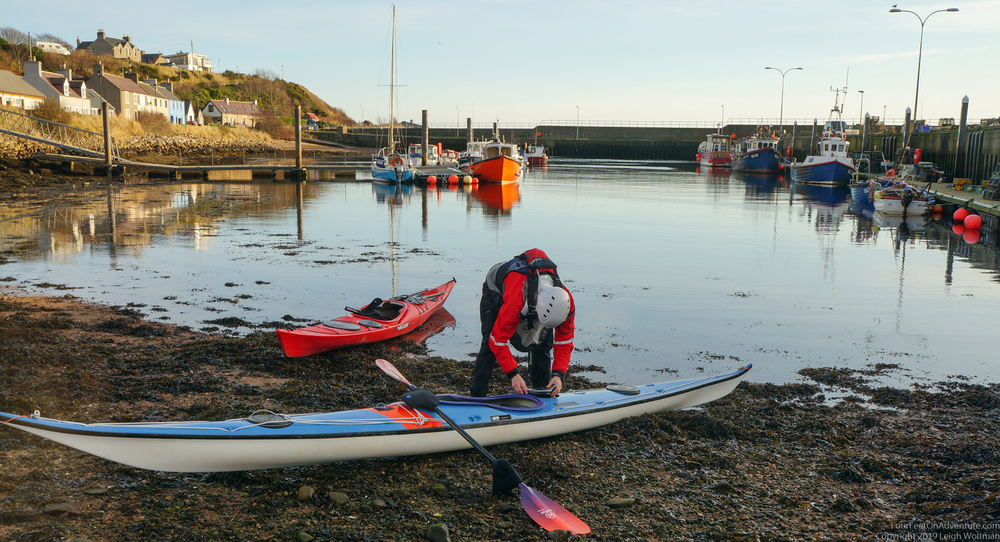
My camera quickly malfunctioned, and needed extraction from the waterproof case to fix a memory card. I tucked into a pebbly beach to do the surgery out of the reach of the ocean. Success, and I slid back into the water.
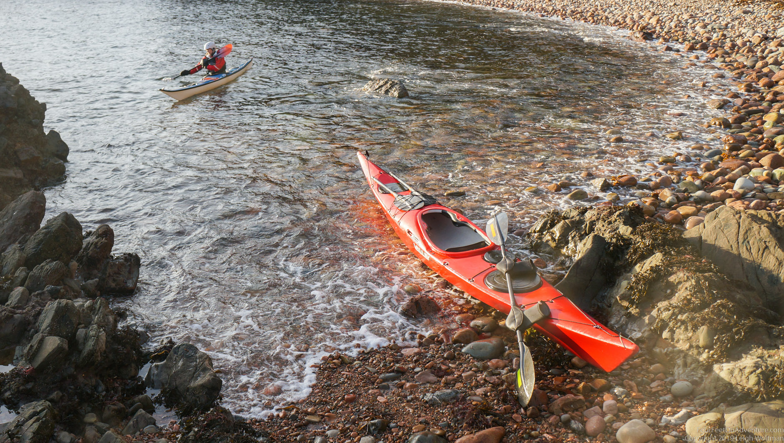
The coast in this area features impressive cliffs which we knew from experience would hold lots of caves. The guidebook for this area promised us possibly the largest sea arch in the British Isles, but even without these features the rock is stunning to look at. The low angle sun at this time of year would mean the cliffs were lit with a form of alpenglow the whole day.
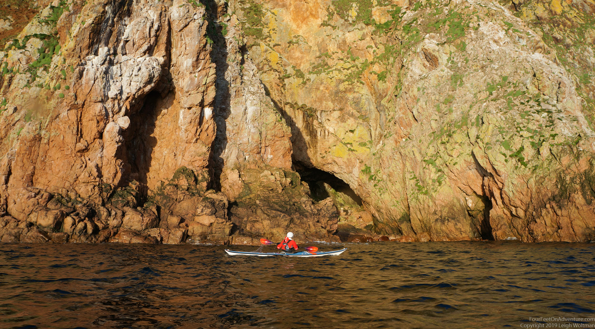
Our first cave to explore was deep and with sun widened eyes we couldn't quite make out the rocks at the back. Only after sitting in the dark recess for a while could you start to make out all the features. Mosses and the occasional gannett clung to the walls.
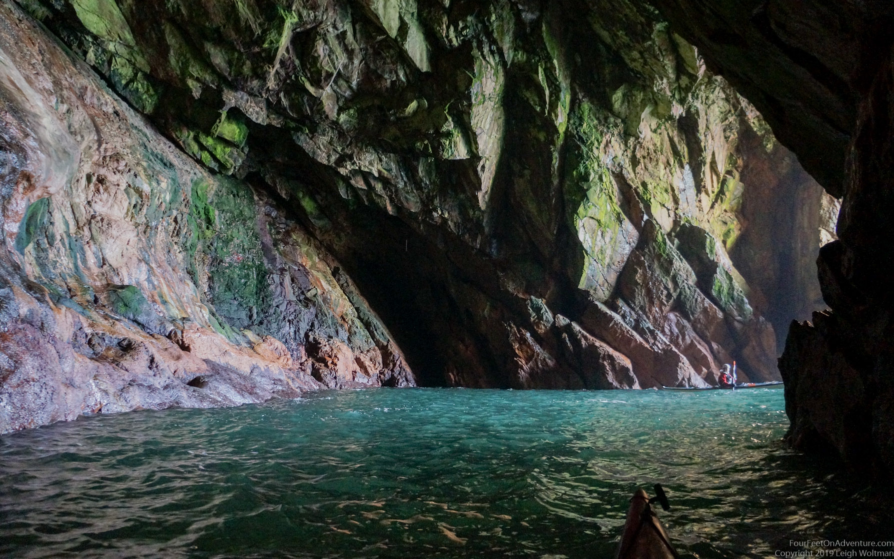
Annette tucked into a cave that didn't seem that promising but it turned out to be special with a vent at the top only visible when you were well inside the crevice.
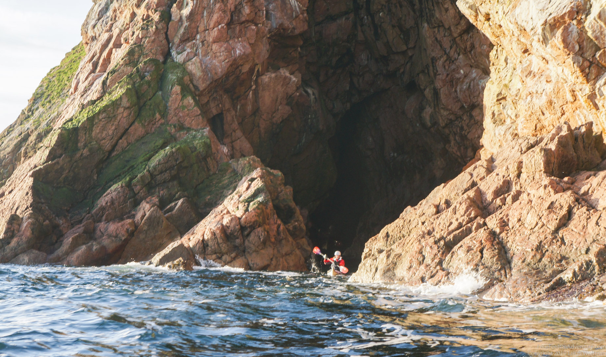
The next cave didn't look very deep due to the deceptive sun which at this angle was shining directly into it. An event that would probably only happen at this time of year, it was glaring off the back of the wet cave illuminating the whole place. The light mean one could see the colours in the rocks, and look down into the turquoise green depths.
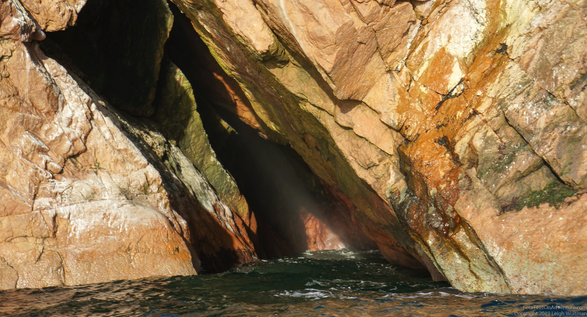
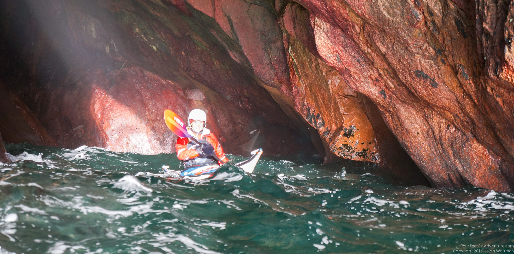
The wind now blowing the whole day had created a good chop coming from the deepest part of the Moray Firth, and some of the deep cliff walls produced a confused clapotis with the incoming waves reflecting off.
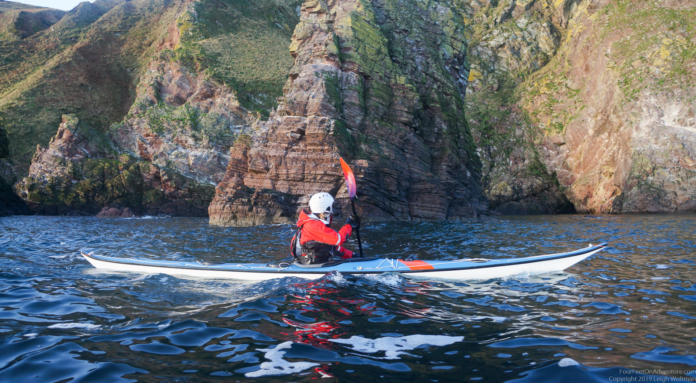
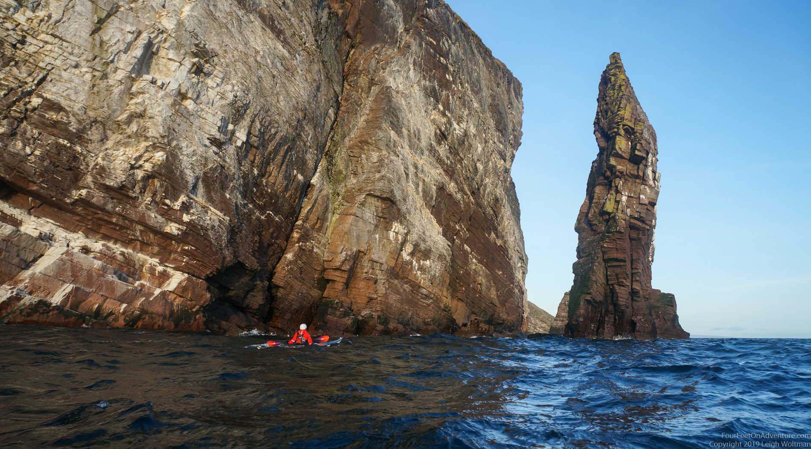
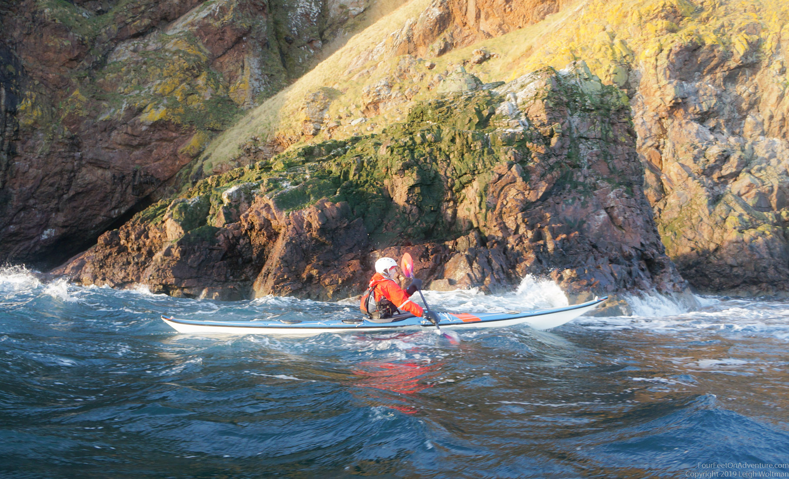
We rounded one corner to find an impressive stream of water pouring directly off the top of the rock. The strong wind meant the waterfall didn't reach the bottom in any kind of organized pattern, being blown well around the corner in a fine mist.
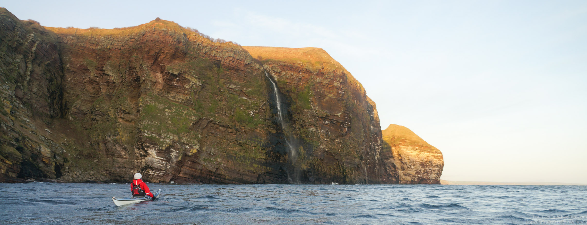
And then we found the promised arch, the grand-daddy of all other sea arches. The scale is hard to describe and the heavily striated rock is slightly angled, making sitting in the arch give the feeling that the whole ocean is running downhill. Not only, is it an impressively high arch, but it is actually a double arch, with a central pillar hiding a smaller passage.
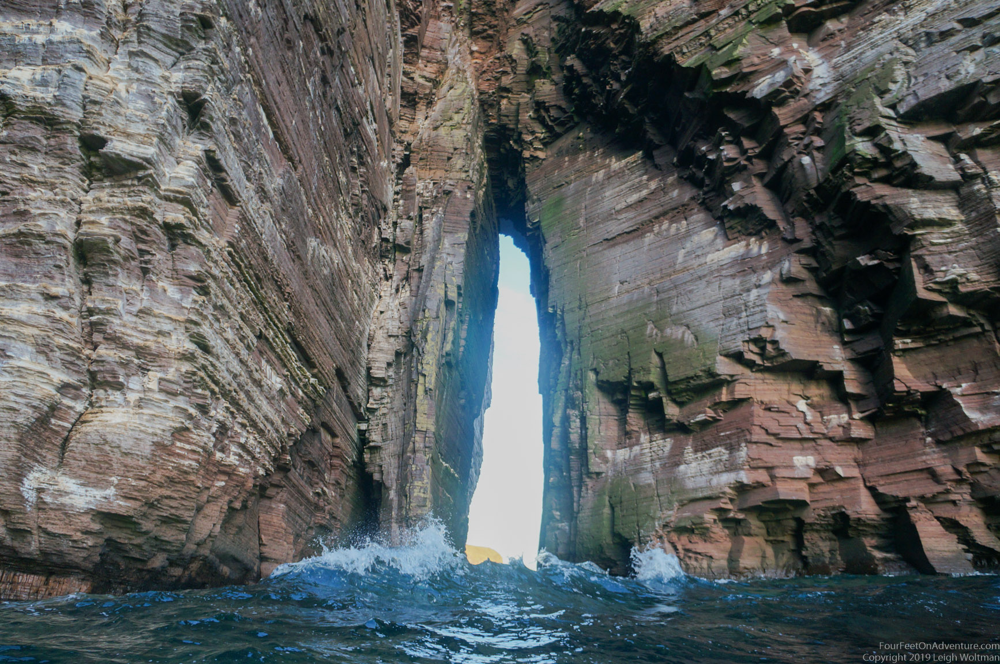
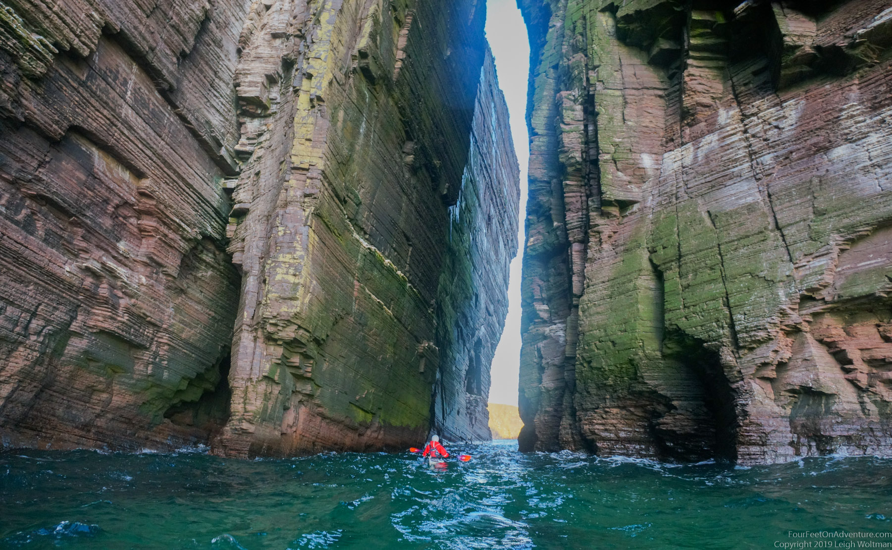
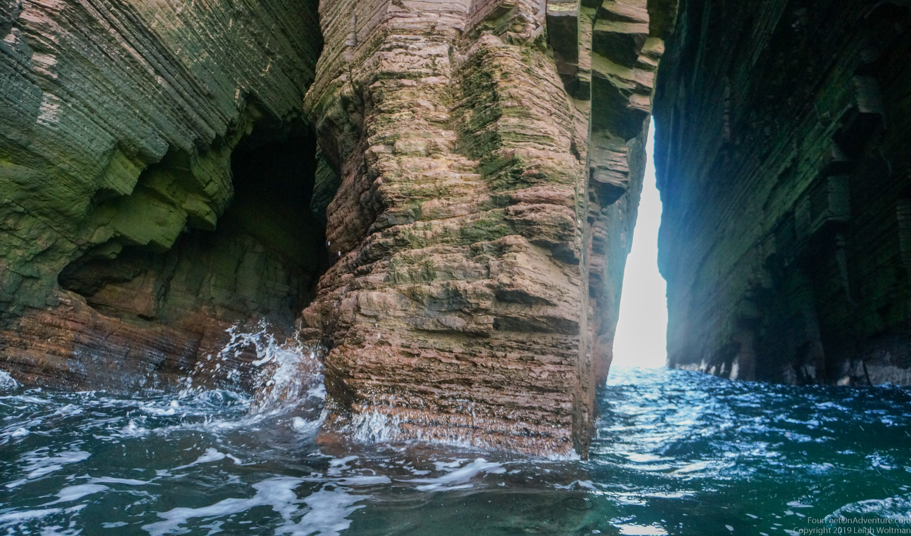
We would have liked to linger further, but we had used much of our daylight. Ahead, we found a much smaller sea arch with deep water, so the wind blown waves didn't make passage overly concerning.
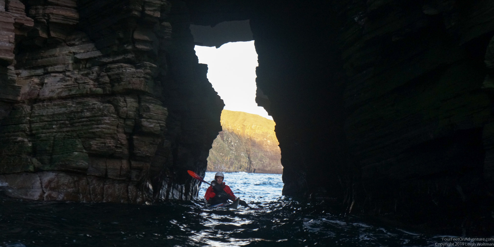
Around the corner, another thinner arch extended off the cliff face.
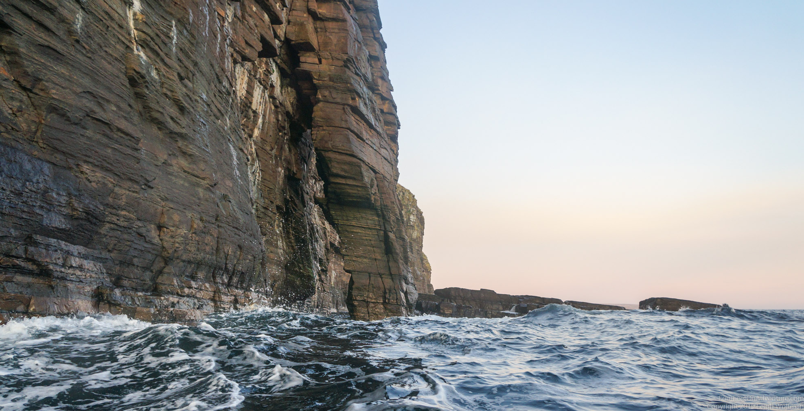
But, as we sighted our destination harbour at Dunbeath, the light was fading, and we made good time to get into the harbour.
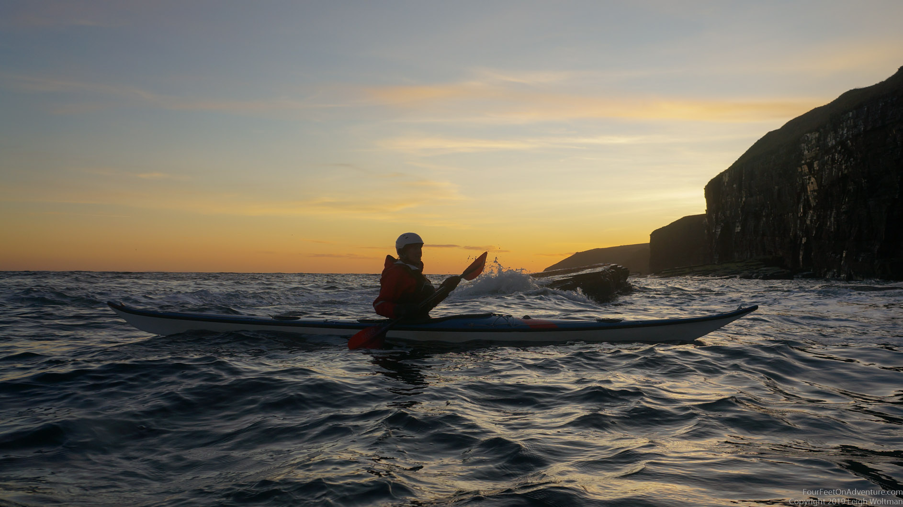
The bike shuttle that Annette pulled off turned out to be a much larger adventure in itself given the steep and winding highway.
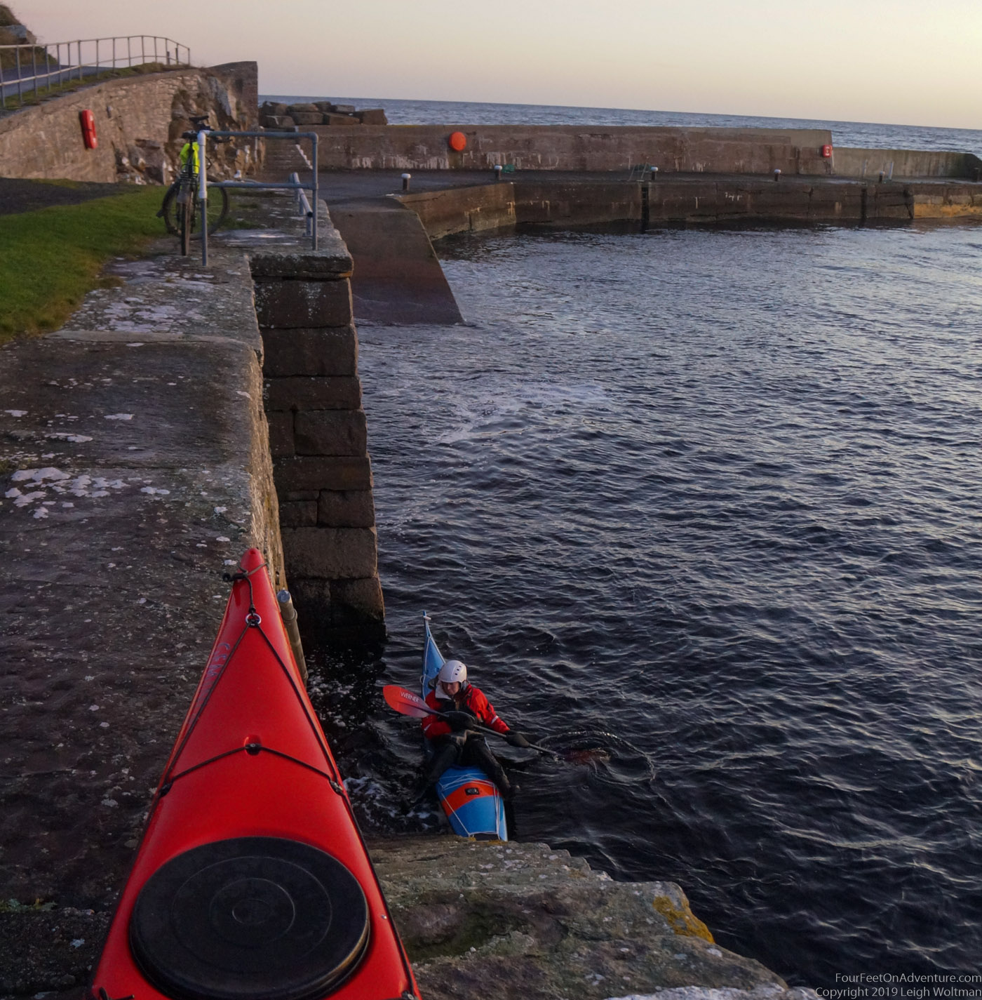
Please send us an email, we would love to hear from you!